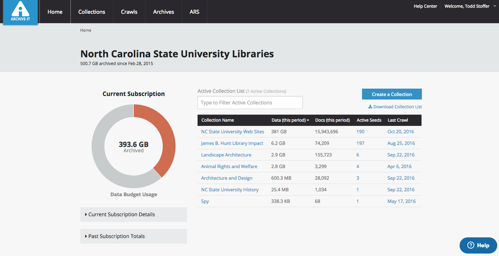
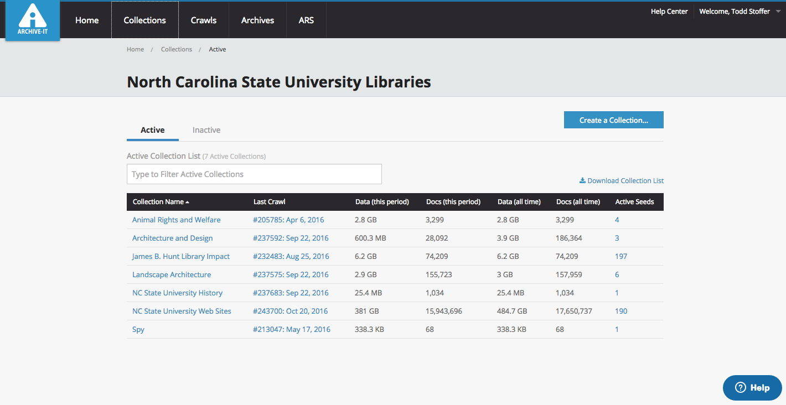
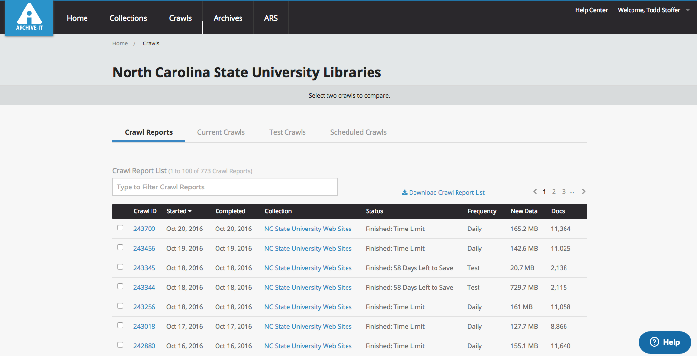
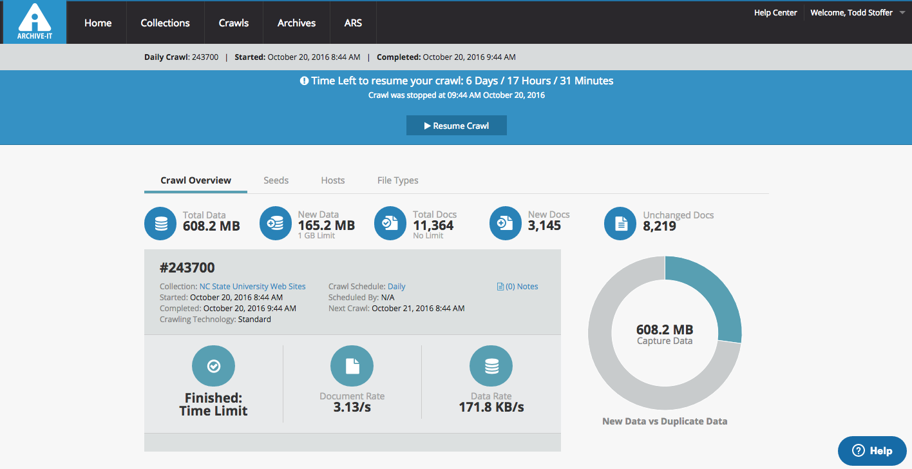
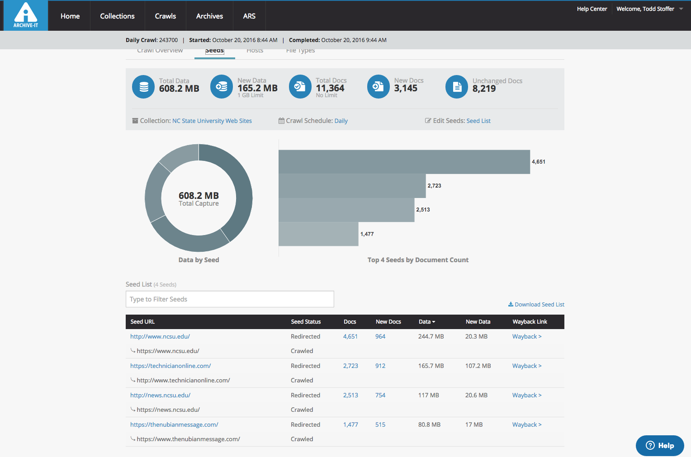
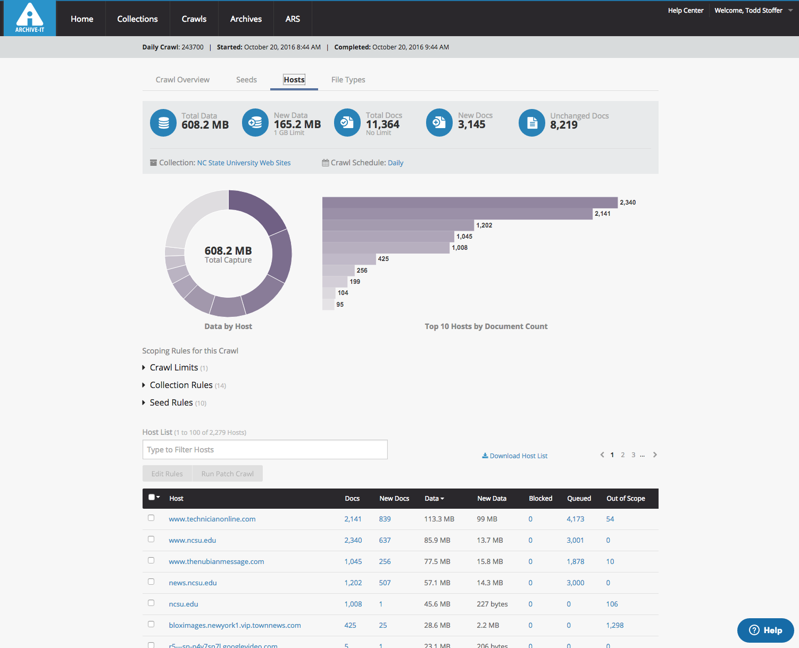
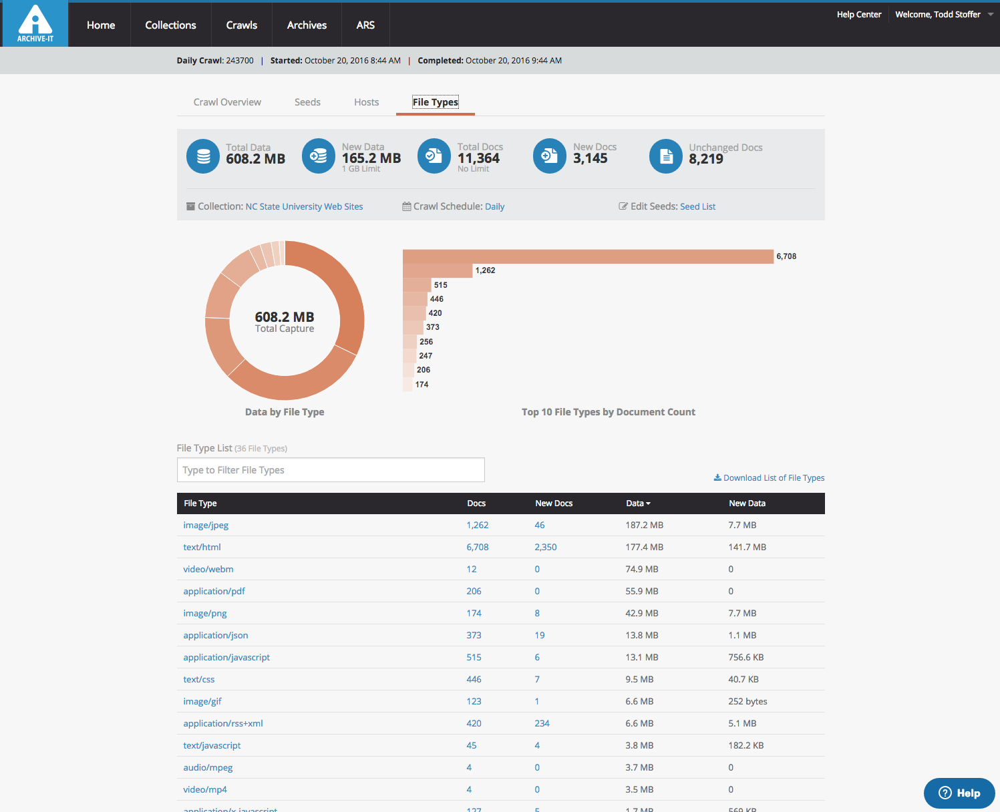
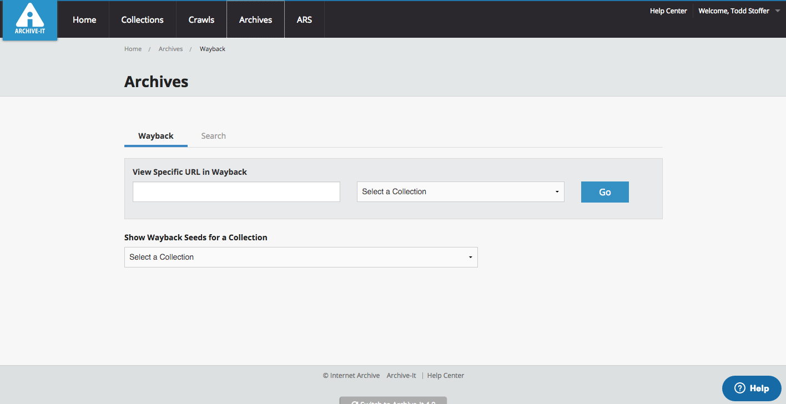
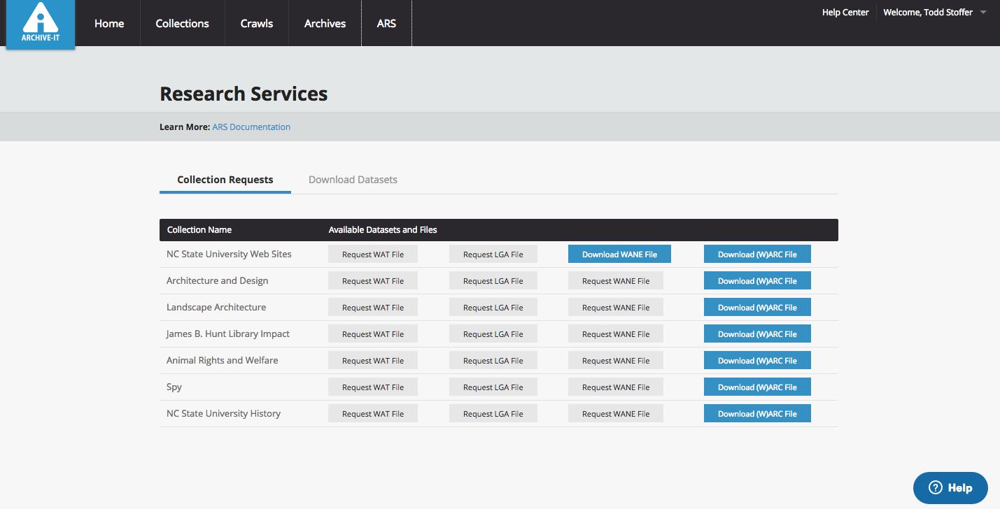

Archive-It Admin Interface
NCSU Libraries uses the Archive-It web archiving service to create our web archives. This service, provided by the Internet Archive, allows us to manage the crawl, capture and storage of websites. Archive-It is a subscription service with an annual fee. To learn more about Archive-It and the Internet Archive you can visit https://archive.org/about/.
Access Restrictions / User Roles
The Archive-It administrator interface can be accessed by logging into https://partner.archive-it.org/archiveit. In order to log in you need to be added as an administrator for our account. There are three levels of access that can be granted:
- Administrator - Full administrative privileges. Can add additional users and manage all aspects of the account.
- User - Can adjust all aspects of the collection, but are not administrators (can not add users)
- Contributor - Lowest level of privileges. They can access the account and see crawl reports, but cannot add or remove seeds, start or stop crawls. This setting is good for staff members conducting QA.
Main Administrative Functions
This is a brief overview of each of the areas available within the admin interface. For more in-depth documentation please visit the Archive-It Help Center. The links below link to our Archive-It administration pages so a valid Archive-It login is required.
Home
When you first log in to the administrative interface you will see the home screen. This screen displays a list of your collections as well as a graph showing your current data usage. Currently we are allowed 1TB of data per subscription cycle (February - February). This page also displays data collection rates for each individual collection for the current subscription period. It is a good way to monitor the data usage, number of seed URLs and recent crawl dates for all of your collections.

Collections
The collections page lists all collections within our account. We base our collections around our current collecting areas. Our primary collection is our NC State University Websites. From this page you can create a new collection, or monitor existing collections. The collections page shows current data, all time data and the number of active seeds for each collection. It is important to note that current data is data collected during the current one-year subscription.

Crawls
The crawls tab provides access to crawl reports, a list of current crawls, a list of scheduled crawls as well as a way to compare two crawls to one another. You can download lists of crawl reports or individual items from within a crawl report from this area. This area also provides a search box allowing you to search by Crawl ID, Status or Frequency.

-
Current Crawls: The current crawls lists every crawl during the current subscription period for your account.
-
Test Crawls: The test crawls tab filters all of the crawl reports to only show reports that pertain to test crawls. This allows you to narrow down the list to see only completed test crawls. These reports are useful when you begin to work on scoping new seeds, and run test crawls to test what the captured data will look like.
-
Scheduled Crawls The scheduled crawls tab shows a list of each collection you have and what crawls are scheduled to run for those collections. It also notes whether or not you have set crawl data limits for any of those regularly scheduled crawls.
Crawl Reports
The crawl reports tab shows a full list of all completed crawls. This includes completed regularly scheduled crawls as well as test and patch crawls. Click on the crawl ID to open an individual crawl report. Individual crawl reports show an overview of the data collected during that crawl. In addition to overall data numbers the following can be accessed from a crawl report:

Seeds
A seed is an individual URL that the crawler uses as the starting point for the crawl. The seeds tab displays each seed that was included in that crawl, which allows you to see what sites you were targeting with that crawl.

Hosts
The hosts report shows every host (URL) that Archive-It attempted to crawl and capture. In addition to seed URLs, the crawler goes out and retrieves other content that is not stored directly on the site, but is included in the HTML code. This list will have a lot of unfamiliar URLs listed on it. The main focus of this tab should be on the number of queued URLs there are for each host. A queued URL is a URL that was identified by the crawler as a URL that should be crawled, but the crawler was unable to capture that URL due to time or data limits set for the crawl. If there are more than a handful, new scoping rules might be required.

File Types
Allows you to see the types of files that were captured in your crawl. This can be helpful in finding out why a crawl might have exceeded the size that you thought it should be. It can also help you find out if individual documents that you are wishing to archive were in fact crawled.

Archives
The archives page allows you to oversee and manage your active archive collections. It gives you an interface to search to find individual URLs within your archive. It essentially mimics the interface found on the public landing page http://archive-it.org/home/ncsu-libraries. You can search to see if something is in the archive, the crawl frequency that seed URL is set to as well as links to the landing page for that particular URL that shows each capture date for the seed URL.

ARS
ARS stands for Archive-It Research Services. From this page Archive-It customers can request a wide range of files for researchers. This is an additional paid service provided by Archive-It. Outside of the paid research filetypes, this page also includes a link to find out more information about downloading WARC files of your collection.

The additional, paid research file types are: * WANE: Web Archive Named Entities uses named-entity recognition tools to generate a list of all the people, places, and organizations mentioned in each URI in a collection along with a timestamp of URI capture.
-
LGA: Longitudinal Graph Analysis files feature a complete list of what URIs link to what URIs, along with a timestamp, within an entire collection.
-
WAT: Web Archive Transformation files feature key metadata elements that represent every crawled resource in a collection and are derived from a collection’s WARC files.
More information on these filetypes can be found on the Archive-It support page.